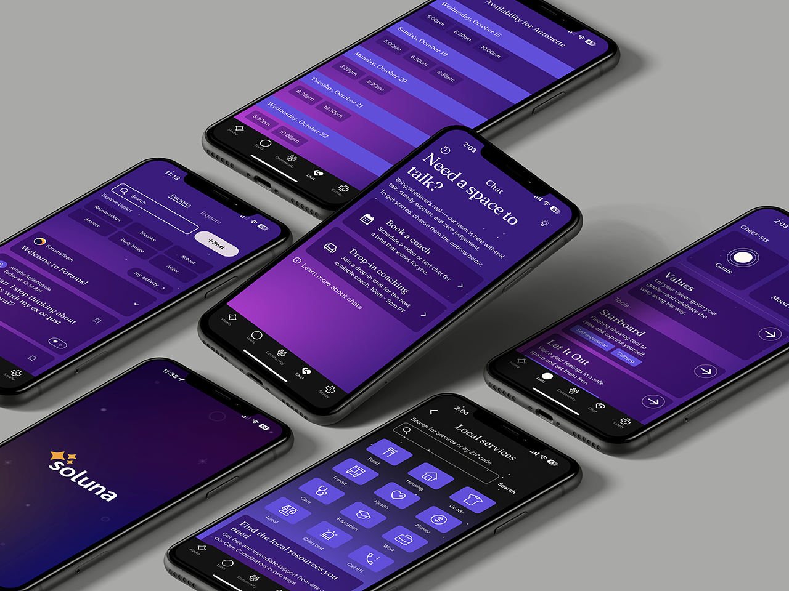
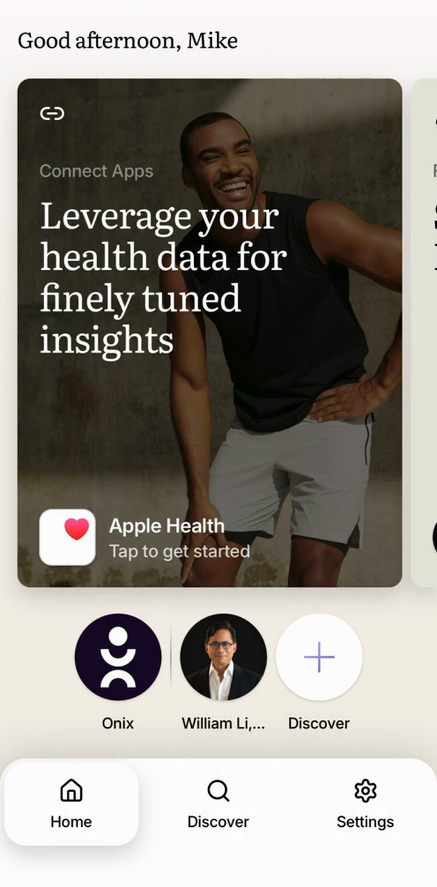
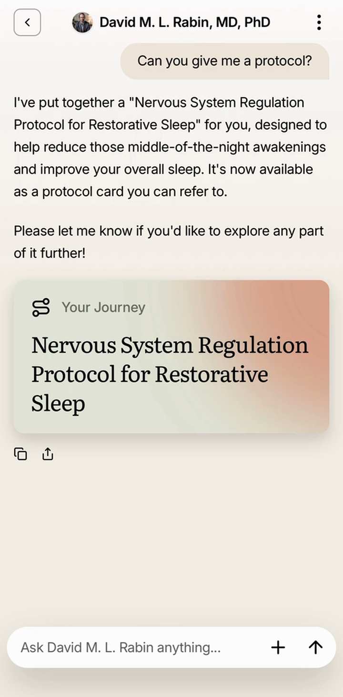
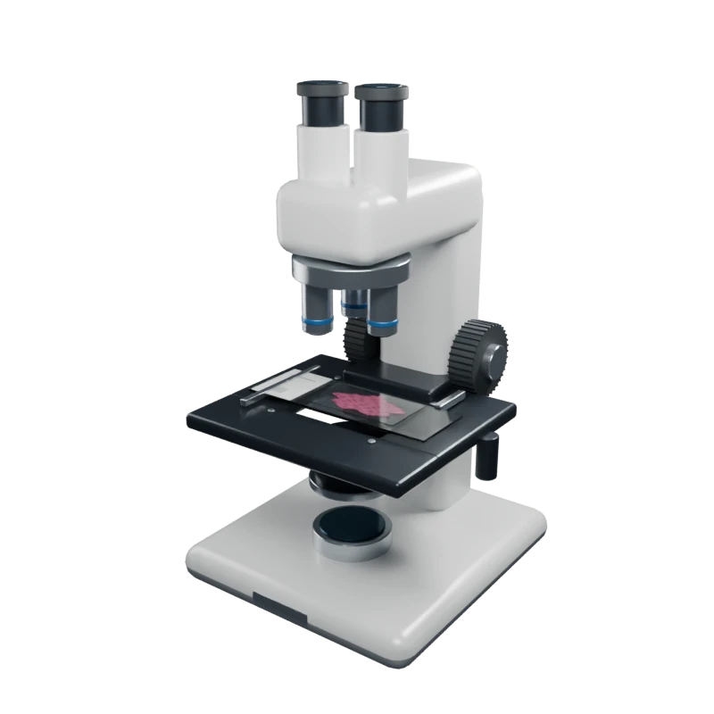
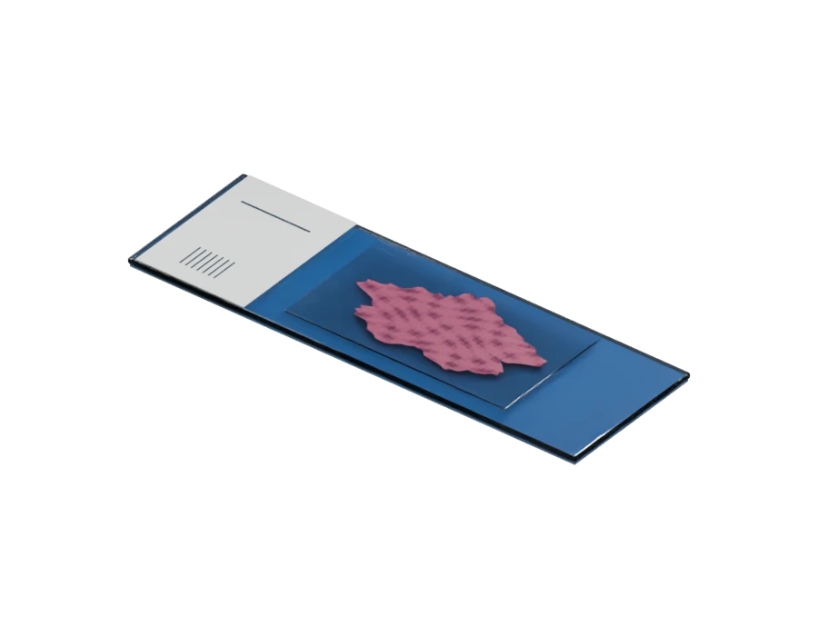
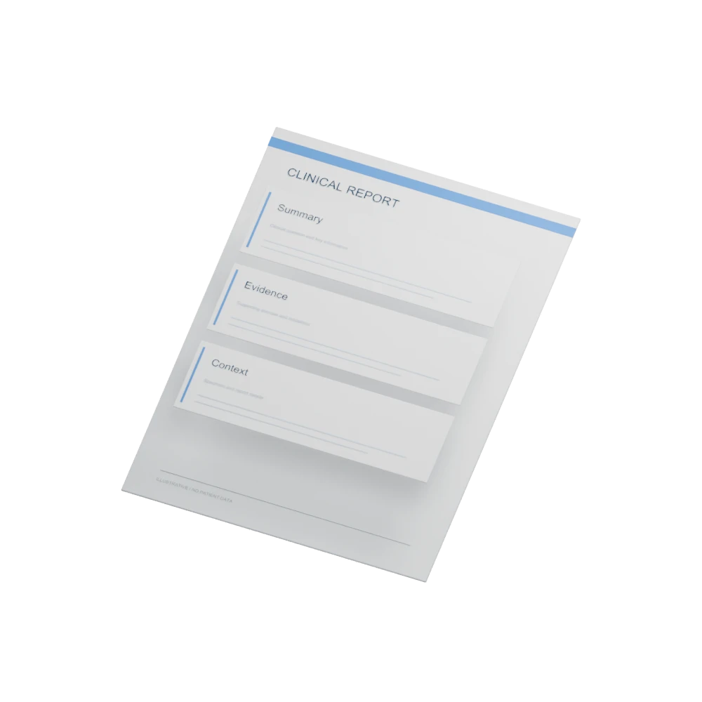
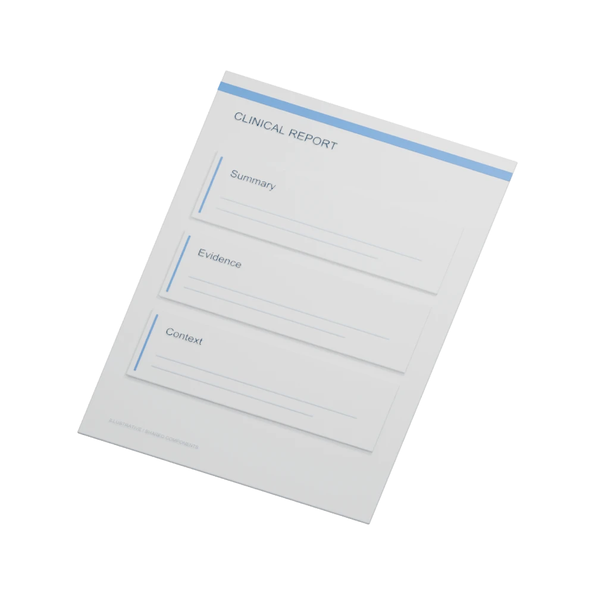

A design leadership perspective
Clarity
that scales.
A shared foundation for Artera’s next chapter.
I started with stories.
I design for understanding.
Where I started
Film & TV post-production.
Recording artist at Interscope.
That experience grounds my design work in narrative, storytelling, and emotional arc.
Sequence.
Emphasis.
Emotional arc.
Knowing what someone needs to understand next.
Kooth / Soluna
Consumer apps.
Practitioner tools.
I led the North American design team and founded the design-system working group.
Clinical trust, accessibility, and medical-device work.
Soluna case study ↗

Onix
Consumer and
expert experiences.
As Head of Design, I built one foundation across product, brand, and code.
An AI health and wellness app, expert tools, and a shared design system.
Onix case study ↗

Both within HIPAA and SOC 2 requirements. Privacy built into the work.
This work is personal to me, too.
“How will you audit our current products to find what needs fixing?”
Artera’s problem
One-off work makes it harder to see what is consistent, usable, and reusable.
My solution
- Visual audit. Do the touchpoints feel like one company?
- Usability and accessibility. Find gaps in both the system and the live product.
- Conversations. Hear from product, engineering, clinicians, and support.
What the team getsPrioritized findings and recommended fixes. Start with clinical clarity, informed by the team.
- Research
- Service design
- Cross-functional review

“What is your framework for setting up design tokens?”
Shared values. Clear purpose. Usable rules.
Agree raw colour, type, and spacing values with engineering.
At Onix: body text for chat messages, not headings.
Onix case study ↗

“How will you ensure accessibility and company-wide understanding of the design system?”
Artera’s problem
A documented component is not enough. Accessibility needs to work in the live product.
At Kooth, header menu items were not working with screen readers. I worked with engineering and our accessibility lead to address the implementation gaps.
My solution
- Audit design and implementation. At Kooth, we separated documentation gaps from gaps in live components.
- Prioritize with the accessibility lead. User feedback helped us identify the problems to address first.
- Fix together and share the findings. Partner with engineering. Update the specification and share guidance through team updates and walkthroughs.
- Accessibility review
- User feedback
- Design-system working group
“How will you align Designers, Product Managers, and Engineers?”
Artera’s problem
One-off work creates rework when teams make decisions without a shared understanding of the problem.
At Kooth, I ran weekly design-system meetings with designers, researchers, and engineers.
My solution
- Agree on the problem and priorities. Product brings business priorities, design brings user needs, and engineering brings technical constraints. Together, we agree what to solve first.
- Make decisions together, early. Use regular cross-functional check-ins and a design-system working group to review changes and resolve blockers before implementation.
- Keep progress and decisions visible. Share a short weekly update: what changed, why, who owns the next step, and where feedback is needed.
“What does your governance model look like?”
Shared components need clear owners and a clear way to change them.
Proof · the council I established at Kooth
decisionsDesign leadMeTech leadUsability &
research leadAccessibility
lead
Agree who leads design, engineering, research, and accessibility.
Propose, review together, test, and release.
Include clinical specialists when clinical content changes.
At Kooth: I led weekly reviews, set contribution and documentation standards, and built components and tokens.
Soluna design system ↗“How will you handle disagreements between teams regarding system updates?”
Artera’s problem
Science wants nuance. Commercial wants simplicity. Engineering wants reuse. All three are right.
My solution
- Patient safety and clinical accuracy
- Regulatory and privacy
- Accessibility
- Consistency and reuse
- Velocity
- Preference
Higher wins. Missing evidence gets a time-boxed pilot, not a longer meeting.
- Decision records
- Usability testing
“How will you convince product teams to stop using their old workflows and adopt the new design system?”
Artera’s problem
Teams know their existing workflows. The system needs to demonstrate its value.
My solution
- Show the benefit on real work. Demonstrate ideation and prototyping with shared components and agentic tools.
- Support the team’s workflow. Explain the tools and validate generated work against the system.
- Agree the migration together. Review one-offs with the team and council. Consolidate overlap and address missing needs.
- Claude Code
- Codex
- Change management
“How will the system scale as the company grows and launches new products?”
Artera’s problem
New tests, lab identities, and local workflows need a common foundation.

Shared modules, arranged for the clinical question.
“What key performance indicators or metrics will you track to prove the design system is working?”
Artera’s problem
We need to know whether the system is being used and making the work better.
My solution
Three measures I used at Kooth: adoption, handoff time, and accessibility quality.
Adoption
Teams using the shared components
At Kooth: replacements reached live products.Efficiency
Design-to-development handoff time
My estimate at Kooth: roughly half the time. Not a formal measurement.Quality
Accessibility issues fixed and found in later audits
At Kooth: known issues resolved and fewer findings in subsequent audits.“How will you communicate the return on investment to executive leadership to secure long-term funding?”
Make the benefit visible
A design system is invisible when it works.
Start with what teams delivered.
Show the reports and product experiences that shipped using shared components.
Connect the work to the company goals it supports.
Show reuse in live products.
Make it clear which teams and products use the system, and where adoption still needs support.
At Kooth, updated components replaced older ones in live products.
Make the evidence honest.
At Kooth, I estimate that design-to-development handoff took roughly half as long. Later accessibility audits also found fewer issues.
The time saving is my estimate. Separate estimates from measured results.
Make the next investment explicit.
Show how shared components support new reports and products with less engineering rework.
Tie the next investment to company goals, including the effort to maintain the system.

Understand.
Prove.
Scale.
Understand the work
Audit, observe, baseline.
Decision: where to startProve a thin slice
Build a pilot report using the design system. Start regular governance reviews.
Decision: what holds upScale what works
Measure, refine, scale to the next context.
Decision: what to invest in nextStart with your teams. Choose a pilot. Prove the value together.